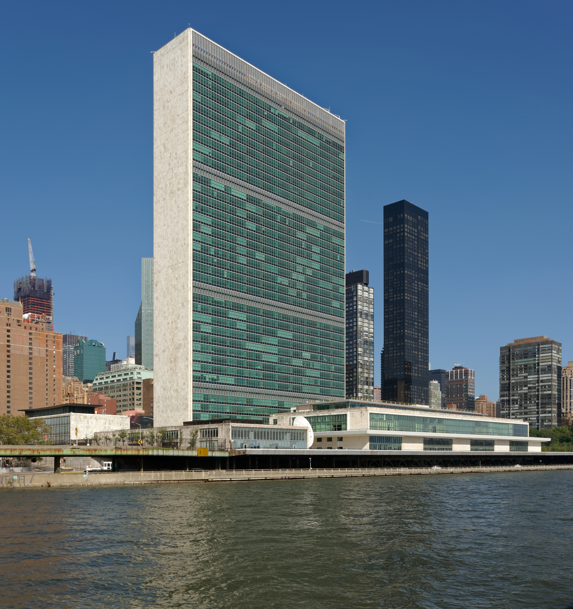

Major Awards & United Nations Architecture
An encyclopedic survey of national honors (Bharat Ratna, Param Vir Chakra, Khel Ratna, Jnanpith), international distinctions (Nobel Prizes in Stockholm/Oslo, Ramon Magsaysay), and the United Nations system (UNSC P5 veto, ICJ at The Hague, and global secretariats from Paris to Nairobi).

National Civilian, Gallantry & Literary Awards
Honors of the Republic of India: Bharat Ratna, Param Vir Chakra, Khel Ratna & Jnanpith
Highest civilian award. Peepal-leaf shaped bronze medallion with embossed sun. No monetary grant. Maximum 3 awards/year.
Announced on Republic Day:
• Padma Vibhushan: Exceptional and distinguished service.
• Padma Bhushan: Distinguished service of a high order.
• Padma Shri: Distinguished service in any field.
Wartime: Param Vir Chakra (PVC - highest; first to Major Somnath Sharma in 1947), Maha Vir Chakra, Vir Chakra.
Peacetime: Ashoka Chakra (highest peacetime), Kirti Chakra, Shaurya Chakra.
• Major Dhyan Chand Khel Ratna: Highest sports honor (first to Viswanathan Anand 1991-92).
• Jnanpith Award: Highest literary honor (first to G. Sankara Kurup in Malayalam 1965).
The Nobel Prizes & Indian Nobel Laureates
Stockholm vs Oslo ceremonies, Alfred Nobel's bequest, and Indian laureates
Nobel Prize Structure
- Origin: Established from the 1895 will of Alfred Nobel (inventor of dynamite); first awarded in 1901.
- Dual Venues:
- Oslo, Norway: Nobel Peace Prize exclusively.
- Stockholm, Sweden: Physics, Chemistry, Physiology or Medicine, Literature, and Economic Sciences (added 1968 by Sveriges Riksbank).
- Presentation Date: December 10 (anniversary of Alfred Nobel's death).
- Other Prestigious Awards: Ramon Magsaysay ("Asia's Nobel" - Philippines; first to Vinoba Bhave 1958); Booker Prize (Literature in English).
Indian / Indian-Origin Nobel Laureates
| Laureate | Year & Category | Seminal Contribution |
|---|---|---|
| Rabindranath Tagore | 1913 Literature | Gitanjali (First non-European laureate) |
| Sir C.V. Raman | 1930 Physics | Raman Effect (Inelastic light scattering) |
| Har Gobind Khorana | 1968 Medicine | Interpretation of the genetic code |
| Mother Teresa | 1979 Peace | Missionaries of Charity in Kolkata |
| Subrahmanyan Chandrasekhar | 1983 Physics | Chandrasekhar Limit (1.44 Solar Masses) |
| Amartya Sen | 1998 Economics | Welfare economics & famine mechanics |
| Venkatraman Ramakrishnan | 2009 Chemistry | Structure and function of the ribosome |
| Kailash Satyarthi | 2014 Peace | Bachpan Bachao Andolan (Child rights) |
| Abhijit Banerjee | 2019 Economics | Experimental approach to poverty alleviation |
United Nations: Charter & Six Principal Organs
Established 24 October 1945 in San Francisco; 193 member states and 6 official languages
1. General Assembly (UNGA)
"World Parliament" comprising all 193 member nations, each with 1 equal vote. Meets annually in September in New York. Elects non-permanent UNSC members, ICJ judges, and approves UN budget.
2. Security Council (UNSC)
Primary organ for international peace and security. 15 members: 5 Permanent members (P5: US, UK, France, Russia, China) with Veto Power + 10 Non-permanent members elected for 2-year terms. Resolutions are legally binding.
3. ICJ (The Hague)
International Court of Justice: Only principal organ NOT in New York. Located at Peace Palace in The Hague, Netherlands. Bench of 15 judges elected to 9-year terms by UNGA and UNSC.
4. Economic & Social Council
ECOSOC has 54 members elected by UNGA for 3-year terms. Coordinates economic, social, environmental, and cultural activities of specialized agencies.
5. Trusteeship Council
Supervised the administration of 11 trust territories transitioning to self-governance. Suspended operations in 1994 when Palau (last trust territory) gained independence.
6. The Secretariat
Executive civil service of the UN headed by the UN Secretary-General (appointed by UNGA on UNSC recommendation for a 5-year renewable term; current: António Guterres of Portugal).
Specialized UN Agencies & Headquarters Directory
Global secretariats, foundation years, and mandates examined in Prelims
World Heritage Sites, scientific cooperation, and global education.
World Health Day celebrated on 7th April (WHO foundation date).
Oldest UN specialized agency (created by Treaty of Versailles).
Food and Agriculture Organization; World Food Day on 16th October.
Born out of 1972 Stockholm Conference on the Human Environment.
"Atoms for Peace"; nuclear safeguards and non-proliferation.
International Maritime Organization for shipping safety.
International Criminal Police Organization (Red Notices).
Active Recall Flashcards
Interactive 3D flip cards covering Bharat Ratna, Nobel ceremonies, ICJ location, and UN agencies
High-Yield Prelims Exam Simulator
Five standard multiple-choice questions on Khan Abdul Ghaffar Khan, Nobel Peace in Oslo, ICJ The Hague, and UNESCO Paris